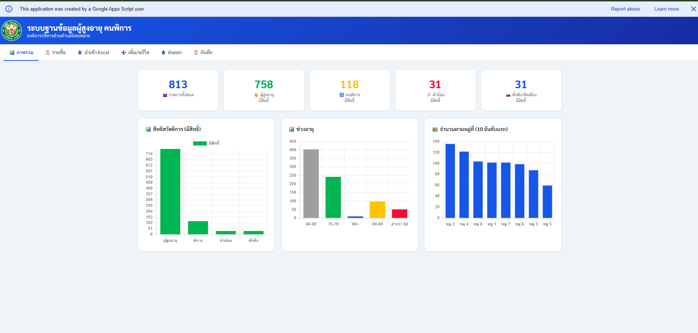

Case study / Google Apps Script
ฐานข้อมูลผู้สูงอายุและผู้พิการ
นำข้อมูลที่กระจัดกระจายมาอยู่ใน workflow เดียว ให้เจ้าหน้าที่ค้นหา จัดการ และสรุปข้อมูลได้สะดวกขึ้น
- เว็บแอปเชื่อม Google Sheets สำหรับจัดเก็บข้อมูล
- มีหน้าสรุปข้อมูลและการจัดการรายการ
- รองรับการส่งออกข้อมูลเพื่อใช้งานต่อ